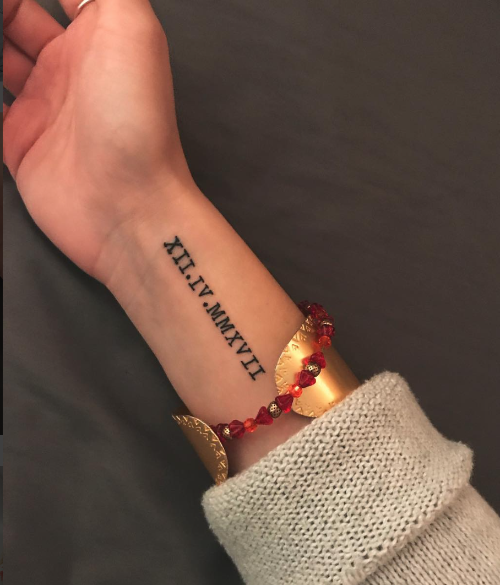

Facts About Me
I have lived in Northern Maine almost all of my life
I have had two dogs, one was named Chance and the other was named Gigi. I was very young when we got Chance so
I don't remember him much. Gigi died this past year and I have a tattoo on my right wrist that honors the day she passed.
My junior year of high school my dad took a job in Danville, California and I spent the year there. Halfway through the year
we realized it wasn't a good fit, and I spent my senior year back at Marshwood with all of my friends
I will never be able to explain the gratitude that I have for my parents for allowing me to come back here to be with my friends
I have had my noise pierced twice, the first time was with a tack
Umaine was my top school and I am so glad that I decided to go here
Gigi

California